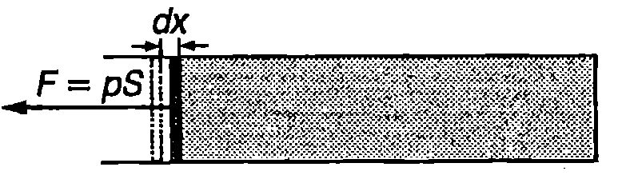
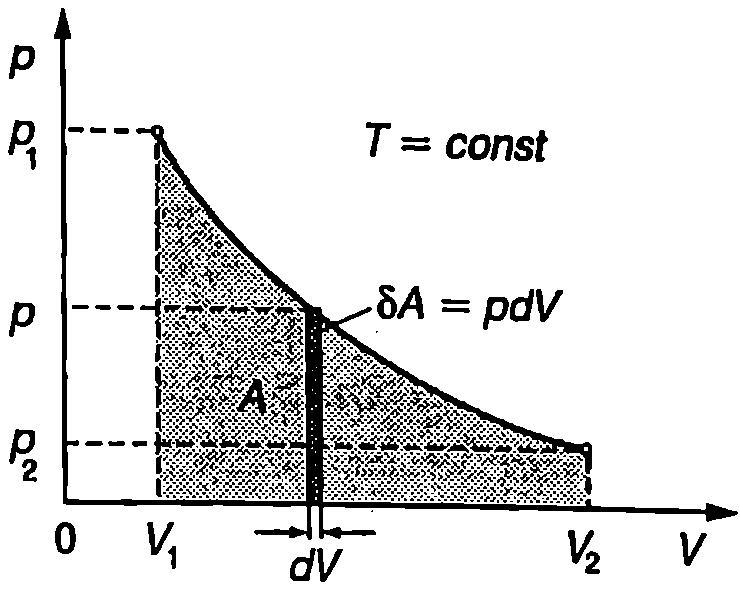
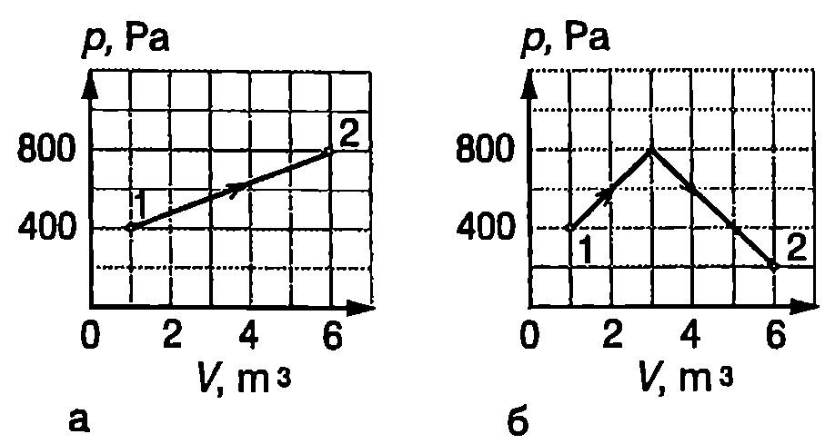
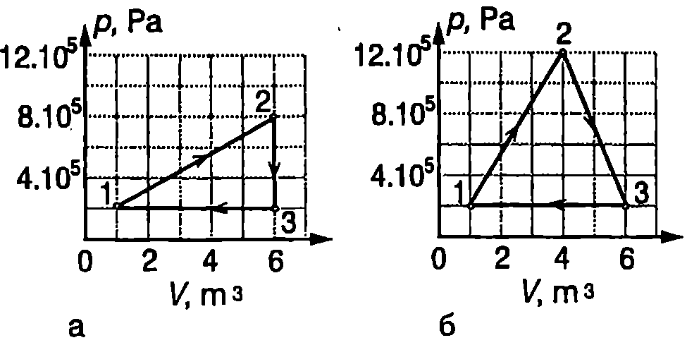
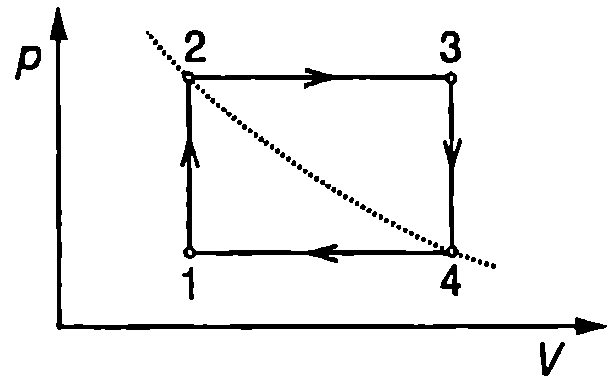

Вътрешна енергия
Всяка термодинамична система се състои от огромен брой частици, които се намират в непрекъснато движение и взаимодействие. Сумата от кинетичната и потенциалната енергия на всички частици определя пълната енергия на системата. Тя се разделя на външна и вътрешна енергия. Външната енергия включва кинетичната енергия на движение на системата като едно цяло, както и потенциалната й енергия в полето на външни сили. Енергията на хаотичното топлинно движение на молекулите (постъпателно движение, въртеливо движение и трептене), потенциалната енергия на междумолекулно взаимодействие, а също така вътрешномолекулната, атомната и ядрената енергия определят вътрешната енергия на термодинамичната система.
Термодинамиката изучава вътрешната енергия на термодинамичните системи и главно тази нейна част, която характеризира хаотичното топлинно движение на молекулите. Вътрешната енергия и е равновесен термодинамичен параметър, който съгласно с втория постулат на термодинамиката е функция от външните параметри и температурата. За проста система
където обемът е единственият външен параметър на простата система. За всички “обичайни” системи вътрешната енергия неограничено нараства при неограничено нарастване на температурата. Само ще отбележим съществуването на специални системи, например съвкупността от ядрените спинови магнитни моменти на някои кристали, където вътрешната енергия клони към някаква крайна граница при неограничено нарастване на температурата. Такива системи тук няма да разглеждаме.
Работа
Съществуват два различни начина за обмен на енергия между една термодинамична система и заобикалящата я среда. Единият начин е чрез извършване на механична (макроскопична) работа, който е свързан с изменение на външните параметри (на обема за проста система). Вторият начин е чрез топлообмен, когато системата се намира в топлинен контакт с друго (по-нагрято или по-студено) тяло.
Да разгледаме газ, който се намира в цилиндър с подвижно бутало (Фиг. \ref{fig:30.1}). Газът действа на буталото със сила , където е площта на буталото, а е налягането на газа. Нека буталото се придвижва много (безкрайно) бавно, така че процесът на разширение на газа да е равновесен. За безкрайно малкото преместване на буталото налягането не се променя. Елементарната работа за това преместване е или
където е изменението на обема на газа.
\begin{figure}[h!] \centering  \caption{} \label{fig:30.1} \end{figure}
Уравнението \eqref{eq:30.2} за елементарната работа остава в сила при равновесно изменение на обема на всяка термодинамична система. Съгласно с третия принцип на механиката термодинамичната система и околната среда си взаимодействат с равни по големина и противоположни по посока сили. Следователно външните тела също извършват работа върху системата, която винаги е равна по големина и противоположна по знак на работата , извършена от системата върху външните тела
Когато обемът на системата нараства (), тя извършва положителна работа върху околните тела (), а околните тела вършат отрицателна работа () върху системата. Обратно, при свиване обемът на системата намалява () и нейната работа е отрицателна. В този случай положителна е работата на външните сили, които предизвикват намаляването на обема на системата.
За да се определи работата, която една термодинамична система извършва при преминаване чрез равновесен процес от състояние 1 в състояние 2, трябва да се изчисли интегралът
Това е възможно, ако аналитично е зададено налягането като функция от обема . Освен от обема обаче налягането зависи и от температурата. Затова от началното състояние 1 може да се премине в крайното състояние 2 по безкрайно много начини, в зависимост от това, как се изменя температурата по време на прехода. Следователно работата , пресметната по формула \eqref{eq:30.4}, зависи не само от началното и от крайното състояние на системата, но и от процеса, чрез който се извършва преходът.
И така, за разлика от вътрешната енергия, работата не е функция на състоянието. Тя не характеризира състоянието на една термодинамична система, а процесите чрез които системата преминава от едно състояние в друго.
Доказва се, че работата , която една система извършва при преминаване от дадено равновесно състояние 1 в някакво друго равновесно състояние 2 чрез неравновесен процес, винаги е по-малка от работата , която би извърши системата, ако същият преход се осъществи чрез равновесен процес (теорема за максималната работа при равновесните процеси) \eqref{eq:30.5}
Пример 30.1
Идеален газ се разширява изотермно (при постоянна температура ) от състояние 1 с налягане и обем до състояние 2 с налягане и обем . Определете работата на газа, ако количеството му е mol. \end{psexample}
Решение
На -диаграмата от Фиг. \ref{fig:30.2} е показана изотермата, описваща процеса на разширение на газа. Елементарната работа се представя графично с площта на правоъгълника със страни и (Фиг. \ref{fig:30.2}). От уравнението на Клапейрон-Менделеев
\begin{figure}[h!] \centering  \caption{} \label{fig:30.2} \end{figure}
\eqref{eq:29.4} изразяваме налягането на газа и го заместваме в израза за елементарната работа: 64 = nRT V-dV. Цялата работа е където при интегрирането е отчетено, че температурата е постоянна. Графично работата се получава като се сумират площите на правоъгълниците, представящи елементарната работа при всички безкрайно малки изменения на обема , на които сме разделили общото му изменение при прехода от състояние 1 в състояние 2. Следователно на -диаграма работата се представя с площта на фигурата, образувана от графиката на процеса, абсцисната ос и перпендикулярите, спуснати от началната точка 1 и крайната точка 2 (Фиг. \ref{fig:30.2}).
Количество топлина
Енергията, която една термодинамична система получава или отдава на околната среда при топлообмен, се нарича количество топлина. Топлообменът се извършва между тела, които имат различни температури, при което тялото с по-висока температура отдава количество топлина на тялото с по-ниска температура. Вътрешната енергия на тялото, което отдава топлина, намалява, а тялото, което получава количество топлина, увеличава вътрешната си енергия. При топлообмен не се извършва макроскопична работа, свързана с изменение на външните параметри (например на обема на проста система). Извършва се работа само на микроскопично равнище. Молекулите на по-нагрятото тяло, чието хаотично движение е по-интензивно, при топлинния контакт извършват работа върху молекулите на по-студеното тяло. В резултат на тази работа част от енергията на хаотичното топлинно движение на по-нагрятото тяло се предава на молекулите на по-студеното тяло и те започват да се движат по-интензивно.
Количеството топлина, подобно на работата, има размерност на енергия (в SI и двете величини се измерват в джаули (J)). Независимо от това работата и количеството топлина не са видове енергия. Те не са функции на състоянието, затова никое състояние на системата не се характеризира с определен запас от работа или от количество топлина .
Механичен еквивалент на топлината
В началото на XIX век се е смятало, че топлината е особена субстанция, наречена “топлород”, която не се създава и не се губи, а подобно на невидим флуид при топлообмен протича от по-нагрятото към по-студеното тяло. С теорията на топлорода е свързано и названието на единицата за количество топлина калория (от лат. calorie - топлород). По определение една калория (1 cal) е количеството топлина, необходимо за повишаване на температурата на един грам вода от 14,5°C до 15,5°C. Дефинираната по този начин калория се нарича 15-градусна калория. Използват се още т. нар. международна калория и термохимична калория, чиито стойности се различават от 15-градусната калория с по-малко от 0,1%. Много често, особено в биологията и диетологията, се използва по-голямата единица килокалория (1kcal = 1000 cal).
В периода 1843-1850 година британският физик Джеймс Джаул (1818-1889) провежда серия експерименти, с цел да изясни количественото съотношение между механичната работа и количеството топлина. Един от знаменитите опити на Джаул е показан схематично на Фиг. \ref{fig:30.3}. Двете тежести, падащи с постоянна скорост , въртят система от лопатки, които извършват механична работа върху водата в съда и тя се загрява. Прецизните измервания на Джаул показват, че работата, необходима за повишаване на температурата на 1 g вода от 14,5°C до 15,5°C, е 4,155 J, т.е. 1 cal топлина е количествено еквивалентна на 4,155 J механична работа (по онова време единицата за работа е имала друго название). Любопитно е да се отбележи, че всички проведени по-късно измервания, включително и в наши дни със съвременна експериментална техника, дават резултат, който се различава от получения от Джаул с по-малко от 1%. На основата на съвременните измервания се приема, че една 15-градусна калория е равна точно на 4,1855 J работа
Съотношението \eqref{eq:30.6}, изразяващо големината на калорията чрез единицата за работа (енергия), се нарича механичен еквивалент на топлината.
Опитите на Джаул бележат началото на важен етап от развитието на съвременната физика, защото отхвърлят теорията за “топлорода” и показват количествената еквивалентност на работата и топлината. Освен това служат като експериментална основа за формулиране на закона за запазване и преобразуване на енергията, отразяващ физичното съдържание на първия принцип на термодинамиката.
\begin{figure}[h!]
\centering
 \caption{Опит на Джаул}
\label{fig:30.3}
\end{figure}
\caption{Опит на Джаул}
\label{fig:30.3}
\end{figure}
Забележка. Съществуват два начина (форми) за обмяна на енергия между дадена термодинамична система и околната среда: 1. работа (с изменение на външните параметри на системата); 2. топлина (без изменение на външните параметри). Количеството енергия, което се предава посредством тези форми (начини) на енергообмен се нарича съответно работа и количество топлина. Самите процеси се наричат работа и топлообмен. Следователно понятието работа в термодинамиката има три различни смисъла: 1. работата като процес; 2. работата като начин (форма) за предаване на енергия; 3. работата като количествена мярка за предадената енергия. При топлинните явления по исторически причини, чиито корени идват от погрешната теория на топлорода, според която топлината е своеобразен флуид, преминаващ при топлообмен от нагретите в студените тела, в трите случая са възприети различни термини: 1. процесът се нарича топлообмен; 2. формата (начинът) за предаване на енергия се нарича топлина; 3. количеството топлина е мярката за предадената енергия. Затова, когато казваме, че тялото поглъща или отдава топлина, имаме предвид формата под която се извършва енергообменът, а когато казваме, че тялото е погълнало определено количество топлина, имаме предвид количествената мярка на получената от тялото енергия в процеса топлообмен.
Вечен двигател (лат. perpetuum mobile)
Още през XIII век редица изобретатели били запленени от примамливата идея да създадат машина, която да извършва работа без да получава енергия отвън. Такава машина по-късно била наречена вечен двигател от първи род. Всички опити обаче завършвали с неуспех и през втората половина на XVIII век Френската академия на науките решава “веднъж завинаги” да престане да разглежда подобни проекти. Вечният двигател противоречи на един от основните природни закони - на закона за запазване на енергията.
Защо такъв фундаментален закон е бил ясно формулиран едва в средата на XIX век? Причината е в погрешната теория на топлорода, която разглежда топлината като особена субстанция, а не като един от начините за обмен на енергия. За да се стигне до закона за запазване на енергията, било е необходимо най-напред да се установи количествената еквивалентност на работата и топлината, т.е. да се разбере, че това са два различни начина за изменение на енергията. Законът за запазване на енергията е формулиран за пръв път през 1842 г. от германския лекар и физик Юлиус Роберт фон Майер (1814-1878) и през 1847 г. от германския физик и физиолог Херман фон Хелмхолц (1821-1894) и е потвърден с опитите на Джаул.
Първи принцип на термодинамиката В своята същност първият принцип на термодинамиката изразява закона за запазване на енергията в термодинамичните системи. Може да се формулира по следния начин:
Всяко състояние на една термодинамична система се характеризира с точно определена стойност на вътрешната енергия. Системата може да променя вътрешната си енергия само при взаимодействие с околната среда: чрез извършване на работа или чрез топлообмен.
Математически първият принцип на термодинамиката се изразява с уравнението
където е вътрешната енергия на системата в началното състояние, - в крайното, е изменението на вътрешната енергия, е количеството топлина, получено от системата, а е работата, която тя е извършила върху околната среда.
За елементарен процес (процес, при който изменението на параметрите на термодинамичната система е безкрайно малко) уравнението на първия принцип на термодинамиката е \eqref{eq:30.8}
където е безкрайно малкото количество топлина, получено от системата, — елементарната работа, която тя е извършила върху околната среда, а е изменението на вътрешната енергия. За означаване на елементарната работа и елементарното количество топлина се използва символът $\delta$'', а не ”, за да се подчертае, че за разлика от вътрешната енергия и работата и количеството топлина не са функции на състоянието. Те характеризират само процесите, чрез които термодинамичната система преминава от едно състояние в друго състояние.
За проста система и уравнение \eqref{eq:30.8} се записва във вида
Пример 30.2
За изпарението на един грам вода, която се намира при атмосферно налягане, е необходимо количество топлина J. Определете изменението на вътрешната енергия на водата при този процес. Обемът на един грам вода е , а обемът на един грам водни пари при атмосферно налягане ( Pa) е . \end{psexample}
Решение
В процеса на изпарение термодинамичната система (водата) увеличава обема си при постоянно налягане и извършва работа върху околната среда
Изменението на вътрешната енергия определяме от уравнението на първия принцип на термодинамиката \eqref{eq:30.7}
Кръгов процес (цикъл)
Кръгов процес или цикъл се нарича последователност от термодинамични процеси, в резултат на които системата се връща в изходното си състояние (Фиг. \ref{fig:30.4}). Тъй като крайното състояние 2 на системата съвпада с нейното начално състояние 1, то и изменението на вътрешната енергия е нула (). Уравнение \eqref{eq:30.7} в този случай добива вида
т.е. полученото количество топлина е равно на работата , която е извършила системата. На -диаграма работата се представя с площта на фигурата, заградена от графиката на цикъла (Фиг. \ref{fig:30.4}).
Следователно машина, работеща по затворен цикъл, може да извършва работа само ако получава енергия (количество топлина) отвън. Това означава, че не е Възможен вечен двигател от първи род, т.е. такава периодично действаща машина, която да извършва работа без да получава енергия от околната среда.
\begin{figure}[h!]
\centering
 \caption{Термодинамичен цикъл.}
\label{fig:30.4}
\end{figure}
\caption{Термодинамичен цикъл.}
\label{fig:30.4}
\end{figure}
Задачи
- Идеален газ се разширява от състояние 1 до състояние 2 през процесите, показани на -диаграмите от Фиг. \ref{fig:30.5}. Определете работата на газа. Решете задачата графично.
\begin{figure}[h!] \centering  \caption{} \label{fig:30.5} \end{figure}
-
Дадено количество идеален газ, което в началното състояние заема обем при налягане , се нагрява и се разширява, докато обемът му нарасне 2 пъти. Определете работата на газа, ако налягането му по време на разширението се изменя по закона , където е константа.
-
Дадено количество идеален газ, което в началното състояние заема обем при налягане Pa, се разширява докато обемът му нарасне 2 пъти. Определете работата на газа, ако налягането му по време на разширението се изменя по закона , където е константа.
-
Дадено количество идеален газ, което в началното състояние заема обем при налягане Pa, се разширява при постоянна температура докато обемът му нарасне 2 пъти. Определете работата на газа.
-
Термодинамична система извършва процес, при който околната среда извършва положителна работа 400 J върху системата, а системата по време на процеса отдава 600 J количество топлина на околната среда. Колко джаула е изменението на вътрешната енергия на системата?
-
Определете количеството топлина, което обменя с околната среда идеален газ за циклите, показани на -диаграмите от Фиг. \ref{fig:30.6}.
-
Идеален газ с маса и моларна маса се охлажда при постоянен обем, докато налягането му намалее пъти. След това газът се разширява при постоянно налягане, докато достигне началната си температура . Определете работата на газа.
\begin{figure}[h!] \centering  \caption{} \label{fig:30.6} \end{figure}
- С mol идеален газ се извършва цикъл, съставен от два изохорни процеса и два изобарни процеса (Фиг. \ref{fig:30.7}). Определете работата на газа, ако точките 2 и 4 лежат на една изотерма. Температурата на газа в състояние 1 е , а в състояние 3 температурата е .
\begin{figure}[h!] \centering  \caption{} \label{fig:30.7} \end{figure}
-
Във вертикален цилиндър под безтегловно бутало се намира mol идеален газ при температура . Външното налягане е постоянно. Колко работа трябва да извърши външна сила, за да повдигне много бавно буталото, докато обемът на газа нарастне пъти. Температурата на газа през цялото време остава постоянна. Триенето се пренебрегва.
-
Идеален газ с маса kg се нагрява изобарно, при което температурата му нараства с К. Определете моларната маса на газа, ако при нагряването той е извършил работа kJ.
-
През 1846 г. Джаул установява експериментално, че за 24 часа кон може да извърши работа, която е равна на работата за издигане на товар с маса kg на височина 30 cm. За същото време конят изяжда храна, при чието разграждане се отделя енергия 120 MJ. Колко процента от тази вътрешна енергия се използва от коня за извършване на механична работа?
-
Момиче, което е на диета, консумира на ден храна с обща калоричност 2500 kcal, а при обмяната на веществата използва 12 600 kJ на ден. Ако приемем, че дефицитът от енергия се попълва в резултат на разграждане на телесни мазнини, за колко дни момичето ще отслабне с 1 kg? При разграждането на 19 мазнини се отделят 39 kJ енергия.
-
Отделената при обмяната на веществата вътрешна енергия може да се измери по изразходвания по време на този процес кислород. При стандартна диета за отделяне на 20 kJ енергия при метаболизма е необходим 1 литър кислород. Колко литра кислород използва за 24 часа момиче с маса 50 kg, което е на стандартна диета? Приемете, че за поддържането на нормални жизнени функции при метаболизма за 1 s трябва да се отделя по 3 J енергия на 1 kg живо тегло.
-
Във физикохимията се използва правилото на Хес, което гласи: топлинният ефект от химична реакция, протичаща при постоянен обем или при постоянно налягане , не зависи от междинните реакции, а се определя само от началното и от крайното състояние на реагиращите вещества. С помощта на първия принцип на термодинамиката докажете правилото на Хес.
-
При образуване на 1 mol вода от елементи се отделя количество топлина kJ/mol, а за изпарение на 1 mol вода е необходимо количество топлина kJ/mol. Определе те какво количество топлина се отделя при получаването на 1 mol водни пари от елементи.
-
Да се определи топлинният ефект при непълното изгаряне на твърд въглерод в атмосфера на въглероден оксид. (Топлинният ефект от тази реакция не може да се определи непосредствено, защото на практика се получава смес от окисите CO и CO.) Известно е, че топлинният ефект при пълното изгаряне на въглерода е 394 kJ/mol, а топлинният ефект при изгарянето на CO е 283 kJ/mol.
-
Оперен певец поддържа тона “ла” в течение на s, при което издишва въздух, чийто обем при нормални условия е l (при температура К и налягане mm Hg). Температурата и налягането в залата са съответно равни на К и mm Hg. По време на изпълнението налягането в дробовете на певеца е mm Hg. Каква мощност изразходва певецът, за да изтласка външния въздух? Изменението на обема на гръдния кош на певеца не се отчита.